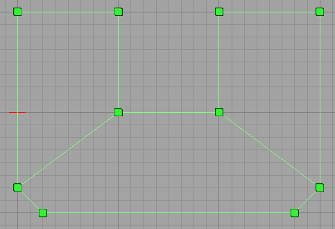
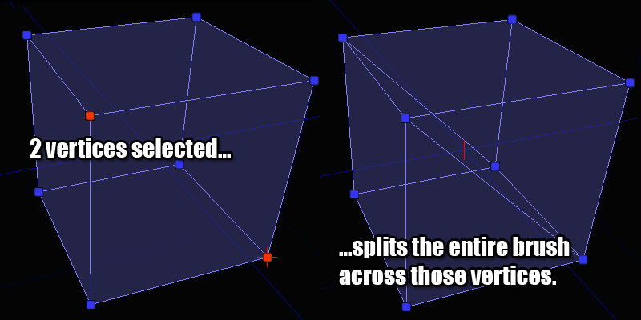
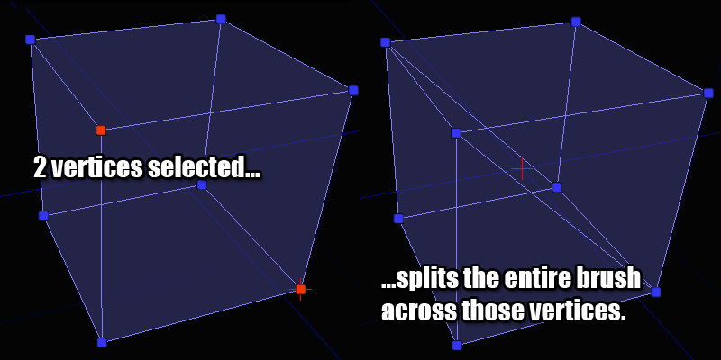

UDN
Search public documentation:
GettingStartedWithGeometryMode
日本語訳
中国翻译
한국어
Interested in the Unreal Engine?
Visit the Unreal Technology site.
Looking for jobs and company info?
Check out the Epic games site.
Questions about support via UDN?
Contact the UDN Staff
中国翻译
한국어
Interested in the Unreal Engine?
Visit the Unreal Technology site.
Looking for jobs and company info?
Check out the Epic games site.
Questions about support via UDN?
Contact the UDN Staff
UE3 Home > Unreal Editor & Tools > Getting Started With Geometry Mode
UE3 Home > Level Designer > Getting Started With Geometry Mode
UE3 Home > Level Designer > Getting Started With Geometry Mode
Getting Started With Geometry Mode
Overview
Starting
Selecting
Editing
Modifiers
Passive Modifiers
Edit
This is the default modifier in geometry mode and it basically represents the status quo. It won't do anything special to your selections. You can drag, rotate and scale your selections in this mode just like a regular actor in UnrealEd.Extrude
Moves the selected object forward, along its normal, creating new geometry behind it if necessary.Properties
Length - How large you want each extruded chunk to be Segments - How many extruded chunks to create each time you apply the modifierExample
In the picture below, I've extruded the top polygon of this brush 64 units:Brush Clip
Brush clipping is a quick way to cut pieces off of a brush or to split a brush into multiple brushes. The basic concept is that you define 2 anchor points in the viewport and when you perform the clip operation, that's the line that is used for clipping. Think of it as pushing a wire through a block of cheese.Properties
bFlipNormal - If checked, the clipping will happen on the other side of the normal bSplit - If checked, the brush will be split into 2 pieces rather than throwing away the geometry behind the clip lineExample
To place the clip achors, make sure the 2D viewport has the focus. You will see a white box that follows your cursor. This box indicates where the clip anchor will be dropped. If you press the space bar, you will drop an anchor down. Move your mouse to the spot where you want the second anchor and hit the space bar again. You will now see something that looks like this: If you make a mistake when placing clip anchors, hitting ESCAPE will remove the last one you dropped down. If you click the "Apply" button (or press ENTER) you will clip away the geometry that is behind the line. The front of the line is indicated by the line pointing out of it in the center. The orientation of the line is important so get used to what that looks like. Once you apply the modifier, you'll see something like this: If you had bFlipNormal checked (or you held down SHIFT while pressing ENTER), you would get the same operation except that it would behave as if the line was oriented the other direction, like this: And finally, if bSplit was selected you would end up with 2 brushes. I've moved the brushes apart in the picture below so you can see the actual result of the split, but you should have the idea at this point:
And finally, if bSplit was selected you would end up with 2 brushes. I've moved the brushes apart in the picture below so you can see the actual result of the split, but you should have the idea at this point:

Pen
The pen modifier allows you to draw a 2D shape in a freeform manner and then convert that shape into a brush. This is extremely useful for creating things like blocking volumes which need to be wrapped around a bunch of geometry.Properties
bAutoExtrude - If checked, the shape drawn will be extruded into a full brush. Leave this unchecked if you are trying to create a sheet brush. bCreateBrushShape - If checked, the result of the modifier will be a "brush shape" and not a "brush". Brush Shapes are used as templates for the Lathe modifier. bCreateConvexPolygons - When the brush is created, the shape you draw needs to be broken down into triangles so that the polygons remain convex (something the Unreal Engine requires internally). If this is checked, those triangles will be optimized into as few convex polygons as possible. ExtrudeDepth - If bAutoExtrude is checked then this field determines how deep of a brush is created.Example
The modifier works much like the brush clipping tool does. You drop down a series of anchor points in a 2D viewport by pressing SPACE and when you're done you press ENTER to create a brush from it. Once you've dropped a bunch of anchor points you might have something that looks like this: When you reach the end of your shape drawing, there are 2 ways to finish the shape and create your final brush. You can either place an anchor point on top of the first one that you placed, closing the shape. Or you can just press ENTER (the first and last anchors will be automatically connected for you). After pressing ENTER, I end up with this result: Here's a look at the resulting brush in 3D so you can get a better sense of what happened:
So you can see how this modifier would allow you to make some pretty complicated brushes and volumes with very little effort.
Here's a look at the resulting brush in 3D so you can get a better sense of what happened:
So you can see how this modifier would allow you to make some pretty complicated brushes and volumes with very little effort.
Lathe
Lathe allows you to take Brush Shapes (created via the Pen modifier) and revolve them around the pivot point to create curved brushes. This is sort of like the old 2D shape editor functionality.Properties
AlignToSide - If checked, the resulting brush will rotated a half turn extra. This becomes more obvious if you play with it. Segments - How many segments you want to have in the resulting brush. TotalSegments - How many segments an entire rotation would contain. The segment fields are a little confusing but really very powerful. Say that you want a 90 degree turn with 4 segments in it. You would set Segments to 4 and TotalSegments to 16. See how that works? 90 degrees is a 1/4 of 360, so 4 segments requires a total of 16 segments to maintain that ratio.Example
Explaining how to use this modifier requires a brief step back to the Pen modifier. To use the Lathe modifier you have to create a Brush Shape. You do this in the Pen modifier by creating a brush but having bCreateBrushShape checked. When you do that, your lines will turn light green to indicate that you are doing the right thing. When finished, you might have a brush shape like this:  You can create as many brush shapes in your level as you want to. They won't affect your BSP geometry at all and are used purely for the Lathe modifier. Once you have a shape selected and want to Lathe it, you need to do a few things. 1. Select the brush shape. 2. Place the pivot point somewhere beside the shape. This is important because the pivot point acts as the center of your rotation. Think of it as the center of your circle. There are a few ways to manually move the pivot point but the quickest is to point where you want it and hold down the ALT key while MIDDLE_CLICKING. 3. Make sure a viewport that has a top-down view of the shape is activated. This is less obvious but will become clear in a moment. Here's a picture of what you should see when you are ready to lathe a shape: So I'm looking down at the shape and have the pivot in a good spot now, so I'm going to click the Apply button. This is what I end up with: And for a better view: You can clearly see here how the brush shape and the pivot work together to create the resulting brush. The brush shape can now be used elsewhere in the level or deleted.Active Modifiers
Delete
Deletes whatever you have selected from the source brush. Note that if you delete something that multiple items depend on (like an edge or a vertex), the geometry will be collapsed to reflect this.Create
Create is useful for those times when you create a hole in your object and need to plug it back up again. It creates new polygons from your set of selected vertices.Example
Let's say you have a brush with a missing polygon - like this one: To create a new polygon to fill that hole, you select the vertices that you want to form the new polygon with in clockwise order and click the Create button. Before you click the button, you would have something like this (notice the ordering on the vertex selection): It doesn't matter which vertex you start with but it does matter that you select them in clockwise order. If you select them in counter-clockwise order nothing bad will happen but the polygon will be created backwards. You'll then have to use the Flip modifier to fix it. Once you click the Create button, you'll have a brush with a new polygon on it:Flip
Flips the selected polygon so it faces the other way. This is useful for fixing brushes that have gone pear shaped for whatever reason or if you create a new polygon but select the vertices in the wrong order.Split
Allows you to perform operations resembling "ring cut" and "scalpel" as they are often named in other 3D packages. Think of it as a specialized version of the Brush Clip modifier.Example
You can split a number of different ways depending on what you have selected on your brush. Each case is shown below: 
If you don't have a valid combination of things selected, the split button will be disabled so refer to these pictures for the valid combinations if you get stuck.

If you don't have a valid combination of things selected, the split button will be disabled so refer to these pictures for the valid combinations if you get stuck.